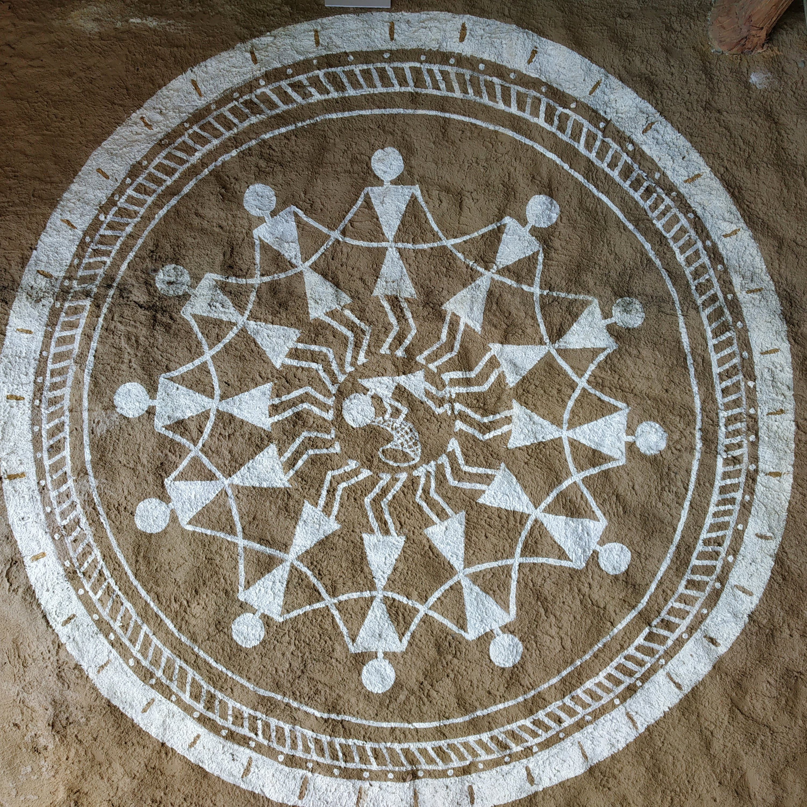

Tribal Vernacular Tradition
Northern Maharashtra
Warli Painting

Authentic Heritage: Warli tribal mural with ritual Tarpa dance circle (Maharashtra)
“A cyclical, monochromatic celebration of Mother Earth (Palghat), where communal life is rendered through the purest geometric simplicity.”
Natural Pigments & Technique
White rice paste bound with water and acacia gum, painted with chewed bamboo twigs upon cow-dung and red geru mud plastered reed walls.
Key Visual Characteristics
- Opposing Double-Triangles: Human figures constructed of two triangles touching at the apex, representing universal equilibrium between heaven and earth.
- Tarpa Dance Formations: Concentric spirals echoing cosmic cycles, seasonal harvests, and unbroken community cohesion.
- Animistic Symbiosis: Absence of linear perspective or human dominance; people, tigers, cattle, and trees share equal compositional weight.
- Monochromatic Restraint: Solely white strokes on red earth ground, emphasizing rhythm and silhouette over surface ornamentation.